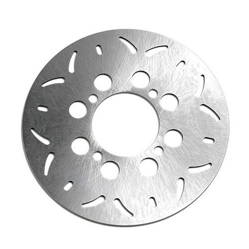

BRAKE ROTORS
- Made with Stainless Steel for increased memory retention during heat cycles
- Each disc is laser cut for precision and to eliminate the stress most other discs occur during stamped manufacturing.
- Full floating rotors self align to provide maximum contact area and cooler running temperatures
- Wide slots help push out hot gases and debris
- Dimpled rotors resist cracking slots and dimples help promote even pad wear
- Offer a slotted and dimpled design for intense braking situations.
- Available for Street Bikes, Sportbikes, Dirt Bikes and ATV
